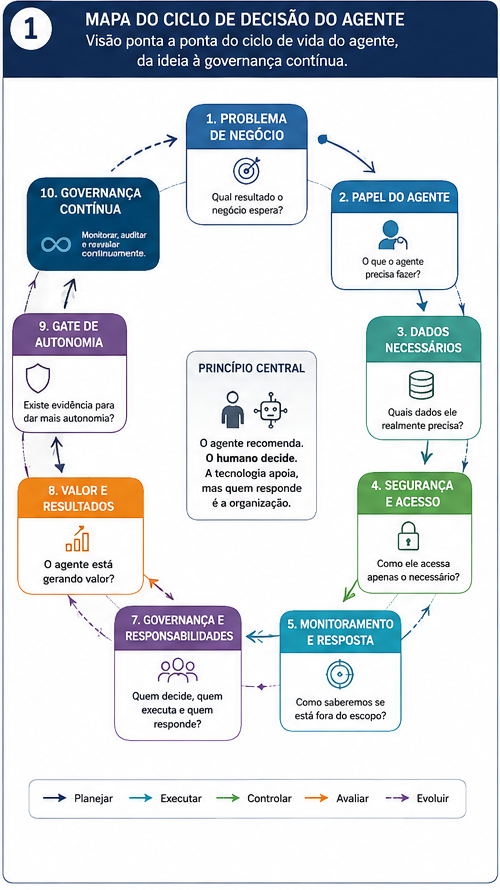
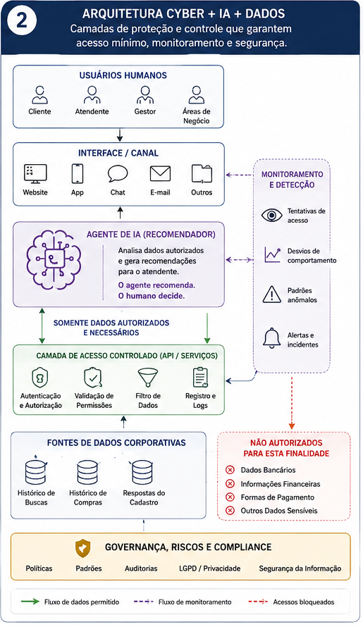
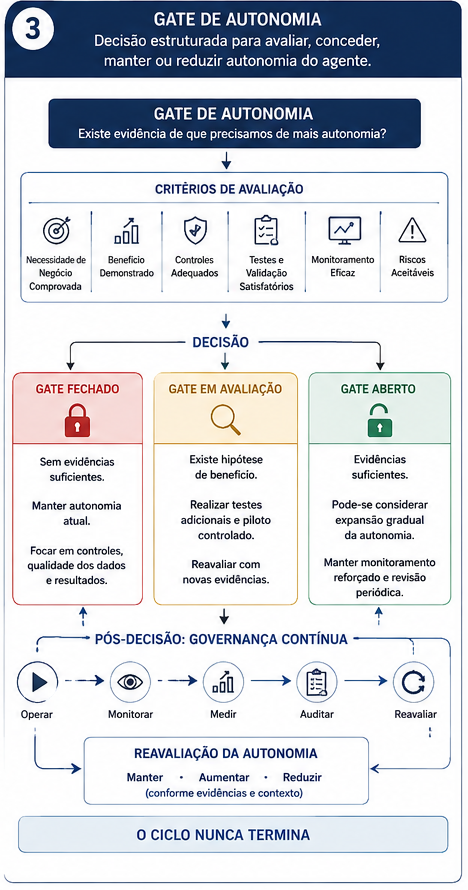

Mais autonomia não significa mais valor.
Como avaliar a adoção de um agente de IA sob a perspectiva de Cybersecurity, Dados e Negócios.
O problema vem antes da tecnologia.
Uma empresa de vendas online identificou uma oportunidade de tornar seu atendimento mais eficiente. A proposta era utilizar um agente de Inteligência Artificial para analisar informações sobre o perfil e o comportamento dos clientes e preparar recomendações de produtos para os atendentes.
O agente terá uma função delimitada: analisar informações autorizadas e preparar uma recomendação para apoiar o atendente. A decisão final permanece sob responsabilidade humana.
O problema orienta a solução.
Dizer que um agente irá “ajudar no atendimento” é insuficiente. É preciso definir a etapa do processo, o resultado esperado, a responsabilidade do agente, os dados necessários e os indicadores que permitirão avaliar o resultado.

A tecnologia apoia. O humano decide.
O agente faz
Análise de informações autorizadas, identificação de padrões e preparação de recomendações para o atendente.
O agente não faz
Não possui acesso irrestrito ao ambiente corporativo e não assume, neste cenário, a decisão final sobre a recomendação ou a venda.
Quais dados o agente realmente precisa?
Mais dados não significa automaticamente melhor decisão. Cada informação disponibilizada precisa possuir uma finalidade clara e justificável.
Dados considerados necessários
- Histórico de pesquisas
- Histórico de compras
- Respostas fornecidas pelo cliente no cadastro
Fora do escopo desta finalidade
- Dados bancários
- Informações financeiras
- Formas de pagamento
- Outros dados que não sejam necessários para a recomendação
Segurança desde a arquitetura.
O agente não deve possuir acesso irrestrito ao banco de dados da empresa. A arquitetura deve partir do acesso mínimo necessário.

Bloquear é necessário. Entender a causa também.
Imagine que o agente tente repetidamente acessar uma informação fora de seu escopo. Se forem identificadas 37 tentativas, não devemos interpretar o resultado apenas como 37 bloqueios bem-sucedidos.
Quando o agente erra.
O agente deve ser tratado como um sistema sujeito a falhas. O incidente pode gerar conhecimento para sua evolução, mas aprender com o erro não significa permitir que o agente altere autonomamente seu próprio comportamento em produção.
Quem conhece o processo precisa participar.
A área responsável pela atividade deve participar desde o início. Ela conhece as dores, exceções, necessidades e critérios que caracterizam uma boa execução. O usuário que trabalha diariamente com o agente também fornece feedback essencial para identificar situações que podem não aparecer nos testes iniciais.
O impacto do agente é responsabilidade organizacional.
| Área | Responsabilidade |
|---|---|
| Negócio | Define o problema e o resultado esperado. |
| Usuários | Validam a utilização prática e fornecem feedback. |
| Dados | Garantem qualidade, tratamento e disponibilidade. |
| IA / Tecnologia | Desenvolvem e mantêm a solução. |
| Cybersecurity | Protege, monitora e responde aos riscos. |
| Jurídico / Privacidade | Avalia questões relacionadas ao tratamento das informações. |
| Governança | Define responsabilidades, critérios e acompanhamento. |
Governança precisa produzir evidências.
Não basta afirmar que o agente não possui acesso a dados financeiros. A organização precisa conseguir demonstrar quais regras estabelecem a restrição, como o acesso é controlado, quando o controle foi testado, quais tentativas foram bloqueadas e o que acontece quando um comportamento inadequado é identificado.
O agente realmente está gerando valor?
A implantação não pode ser considerada bem-sucedida apenas porque o agente está funcionando. Precisamos retornar ao problema original e estabelecer uma linha de base para comparar o cenário antes e depois.
Precisamos realmente aumentar a autonomia?
A resposta não pode ser “sim, porque ele consegue”. A pergunta correta é se existe uma necessidade de negócio comprovada para que o agente faça mais.

GATE FECHADO
Sem evidências suficientes. Manter autonomia atual e focar em controles, qualidade dos dados e resultados.
GATE EM AVALIAÇÃO
Existe hipótese de benefício. Realizar testes adicionais, piloto controlado e reavaliar evidências.
GATE ABERTO
Existem evidências suficientes. Pode-se considerar expansão gradual, com monitoramento reforçado.
O agente nunca está realmente “terminado”.
O ambiente muda constantemente: dados, processos, sistemas, clientes, modelos e riscos. Por isso, a governança precisa permanecer ativa após a implantação.
Implementar — dentro de um escopo controlado.
Decisão
Utilizar o agente como mecanismo de apoio à recomendação de produtos, utilizando somente informações necessárias e autorizadas, como histórico de pesquisas, histórico de compras e respostas fornecidas pelo cliente durante o cadastro.
O agente não deve possuir acesso irrestrito ao banco de dados corporativo, nem às informações financeiras ou a outros dados que não sejam necessários para sua finalidade.
Sua atuação deve permanecer inicialmente como apoio ao atendente, mantendo a decisão humana sobre a recomendação final.
Não recomendamos ampliar a autonomia neste momento sem evidências concretas de necessidade e geração de valor adicional.
A decisão não é sobre dar mais autonomia à IA.
É sobre encontrar o nível de autonomia adequado ao problema que a organização precisa resolver.
Mais autonomia não significa mais valor.
Mais valor significa tomar melhores decisões sobre onde — e até onde — a tecnologia deve atuar.